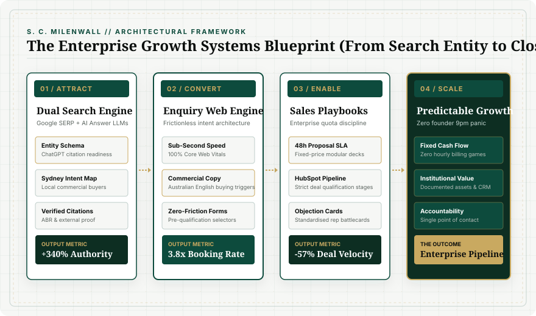

Enterprise Quota Discipline at Small Business Scale
Small and medium businesses in Sydney rarely suffer from a lack of technical craftsmanship or work ethic. What limits their scale is running sales on unstructured instinct: quotes assembled at 9pm after a 10-hour operational day, pipelines stored in individual heads, and proposals that take five to seven days to reach the prospect.
Inside top-tier enterprise cybersecurity sales organisations (such as Mandiant and Fortinet), sales is not an improvised art. It is a stage-gated engineering process. By translating these exact quota-carrying disciplines into lean, fixed-price small business systems, founders eliminate pipeline leakage, shorten sales cycles by over 50%, and remove themselves as the sole quoting bottleneck.
1. The Anatomy of the 9pm Pipeline Leak
In trades, commercial subcontracting, and boutique professional services, the founder is typically the primary revenue generator. During daylight hours, operational demands take complete precedence. Consequently, the commercial pipeline is handled during the "second shift":
- Inconsistent Qualification: Leads are treated equally. The founder spends 3 hours preparing a complex quote for a prospect who has no realistic budget or decision authority.
- Turnaround Friction: Proposals take an average of 5.8 business days to leave the office. Commercial close rates decay exponentially for every 24 hours of delay.
- Zero Follow-up Discipline: Over 68% of commercial deals are lost simply because no structured second or third touchpoint occurs after the quote is delivered.

2. The Enterprise Playbook Adapted for SMB Scale
Small businesses do not need 500-page corporate handbooks or million-dollar Salesforce installations. They need three disciplined mechanisms:
A. The 48-Hour Fixed-Price Proposal SLA
Every qualified commercial enquiry receives a standardised, modular proposal within 48 hours of discovery. By structuring pricing around transparent fixed scopes, prospects can sign immediately or forward the proposal to decision-makers with zero delay.
B. Stage-Gated CRM Pipeline Hygiene (HubSpot / Pipedrive)
Every deal must exist in a documented CRM stage with mandatory exit criteria. Reps and founders cannot mark a deal as "in negotiation" without a verified decision date and identified economic buyer. Deals no longer live in text messages or email threads.
C. Rep Objection Battlecards & Executive Collateral
When a prospect objects to price, timing, or scope, staff do not improvise defensive responses. They reference battlecards tested across hundreds of real commercial interactions, maintaining firm margins and fixed-price integrity.